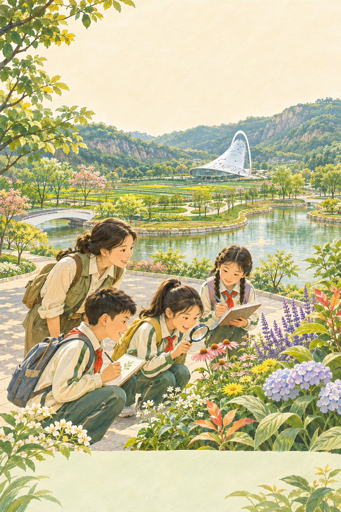

小学4—6年级
给校园设计一座会呼吸的花园
- 比较两株植物，各记两项特征
- 100毫升同量降雨，观察覆盖与裸土差异
- 画出80平方米花园，用两条证据解释设计
带回什么 观察手册＋A3花园图＋3分钟分享
把课堂搬进花园
带一份有证据的设计回校园
丽水出发｜一日往返｜小学 · 中学 · 大学
课程作业设计，非园区官方招募；预约与锁价后实施。

围绕“校园需要一座怎样的花园”，用气象、湿地、植物和建筑观察支持一次校园花园设计。
南园入口 → 绿谷花街三馆 → 植物专类园 → 葳蕤馆外 → 室内模型与设计 → 南园出口
按获准步道闭环组织，目标步行2—3公里，实际距离以出团前复核为准。葳蕤馆安排外部观察；三馆及室内教学空间均须落实团队预约。三馆轮转顺序可随接待调整。
沿用项目内小学方案的三馆—植物—建筑—模型—设计结构；按丽水出发重排交通与接待。依据景区实际点位和公开资料制定，未把11月9日未提供的现场实测数据写成事实。
给校园设计一座会呼吸的花园
带回什么 观察手册＋A3花园图＋3分钟分享
一滴雨的园林旅行
带回什么 原始记录＋对照表＋校园微更新建议
园林里的可持续设计
带回什么 现场证据表＋1页提案＋3分钟路演
按学段分别成团。小学低年级如参加，另行减少步行与书写、增加成人支持并重新报价；不直接套用本方案。中学生进一步讨论模型误差，大学生重点提交公共空间提案。
07:00在丽水莲都学校集合，18:15前完成返校交接。具体校址与日期确定后，由承运人核定路线和车程；青田及其他县市出发另行重排。
| 07:00—07:20 | 丽水莲都学校集合 签到、健康核对、分组、安全带检查 |
|---|---|
| 07:20—09:20 | 包车赴温州园博园南园 高速往返；单程2小时为设计预留，含拥堵机动 |
| 09:20—09:40 | 南园入园集合点 核人、如厕、补水；发布校园花园设计任务 |
| 09:40—11:20 | 绿谷花街三馆轮转 气象、湿地、花卉科普；每馆30分钟，转场各5分钟 |
| 11:20—11:35 | 绿谷花街 整理记录、洗手、如厕 |
| 11:35—12:20 | 获准团队用餐区 合规团餐与坐下休息，供餐点须预约确认 |
| 12:20—12:35 | 南园步道 随队步行至植物观察点 |
| 12:35—13:15 | 植物专类园 比较两株挂牌植物；记录光照、叶形和名称来源 |
| 13:15—13:30 | 步道休息区 补水、如厕、休息 |
| 13:30—13:55 | 葳蕤馆外 观察建筑外形与场地关系，不含入馆 |
| 13:55—14:10 | 返回绿谷花街 转场、洗手、核人 |
| 14:10—14:45 | 拟预约室内教学点 覆盖土与裸土径流对照模型；记录结果与局限 |
| 14:45—15:15 | 同一教学点 分龄小组设计：10米×8米校园花园 |
| 15:15—15:45 | 同一教学点 6组各3分钟发布，余时互评、收纳和结营 |
| 15:45—16:00 | 南园指定上客点 如厕、逐名核人、核座位、上车 |
| 16:00—18:00 | 包车返丽水 返程；交通延误由领队统一通知 |
| 18:00—18:15 | 原集合学校 未成年学生逐人交接；大学生按签到流程离团 |
甲、乙、丙三队按气象→湿地→花卉错峰轮转，每队13—14名学生、2名成人；每大队再分2个学习小组。转场5分钟是计划值，距离不符则改为单馆深学＋室内图卡补课。
标准团40名学生＋6名成人带队＋1名司机，共47人，使用49座客车；按学段分别成团，同一接待配置测算。
| 项目 | 测算口径 | 金额 /元 |
|---|---|---|
| 49座往返包车 | 1辆×1日，暂含司机、油路费及停车等候 | 2,800.00 |
| 午餐 | 47人×35元（40学生＋6成人＋1司机） | 1,645.00 |
| 教学场馆与室内空间 | 团队教学及可能收费合并预留 | 1,000.00 |
| 外聘人员 | 主导师600＋助教350＋急救支持450 | 1,400.00 |
| 课程材料 | 40人×12元 | 480.00 |
| 手册印制 | 46本×8元 | 368.00 |
| 活动保险 | 46人×10元；司机保障另核承运人 | 460.00 |
| 公共设备与耗材 | 对讲设备、急救与清洁补充 | 250.00 |
直接成本8,403元＋5%机动420.15元＝8,823.15元
成本约220.58元/生；销售额249×40＝9,960元；与预算成本之差1,136.85元，为组织管理及利润空间（约销售额的11.41%，非净利润）。所有采购单价均为设计估算，尚未取得供应商回单。
往返包车、1次午餐、课程组织与带队、教学场地费用预留、手册材料、活动保险及公共物资。
早餐与晚餐、住宿、个人消费、游船与观光车等额外付费体验、葳蕤馆入馆项目。无购物安排。
40人为此参考价的成团基线；少于40人、跨县接驳或增加付费项目须重新报价。不得以249元承诺所有人数、日期和出发地。
课程预约确认后再锁价。退改为拟定规则：出发7日前取消退未发生费用；7日内按有凭证的实际不可退支出结算；因闭园或恶劣天气优先改期，无法改期退未发生费用。以正式合同约定为准。
丽水莲都集合，沿适用高速至园区南园。南园可经潘桥等收费站接入，具体道路及上下客位置由承运人与园区确认；社会车辆不进入游览步道。一人一座一带，核验车辆、司机证照与保险。
47份35元标准合规团餐，拟送至获准团队用餐区；包含荤素搭配、主食、饮水，提前确认过敏替代餐及清洁安排。45分钟午餐休息，不住宿。
3名校方教师＋主导师1名＋助教1名＋具急救能力的安全人员1名；司机不计带队。大学团由校方指导教师承担相应组织岗位。三队每队2名成人，转场、进出馆、如厕和上下车逐名核人。
出团前核准三馆时段、室内空间容量、实验许可、供餐区、上下客点、避险点。每人一本记录手册，每组一份作品；回校3日内完成反思与展示。
出发前72小时、24小时及当天早晨核查气象和园区通知。小雨且交通安全时，户外观察改为室内实景图卡及清洁样本；明确标注“资料观察”。雷电停止户外活动，进入已确认安全室内；闭园、危险天气或避险场所未落实时改期或取消。
不采食、不攀折、不临水取样，不进入崖壁、施工与未开放区域。模型水禁止饮用，模型不证明水体可饮用。突发急症联系120并由指定成人引导救援，其余学生原地安全集中核人；严重失联及时联系园区安保及110。
基于项目内《温州园博园一日研学方案（规范排版）》及下列公开资料更新，核查日期2026年11月11日。南园点位为实际景区资源；车程、步行距离、采购预算与课程均为本产品的设计安排。未获得11月9日现场实测记录，未虚构实测结论。
AI用于资料整理、分龄任务与宣传排版；地点、价格、科学结论由人工核对。主题插画沿用项目素材，不作为现场景观或花期承诺。